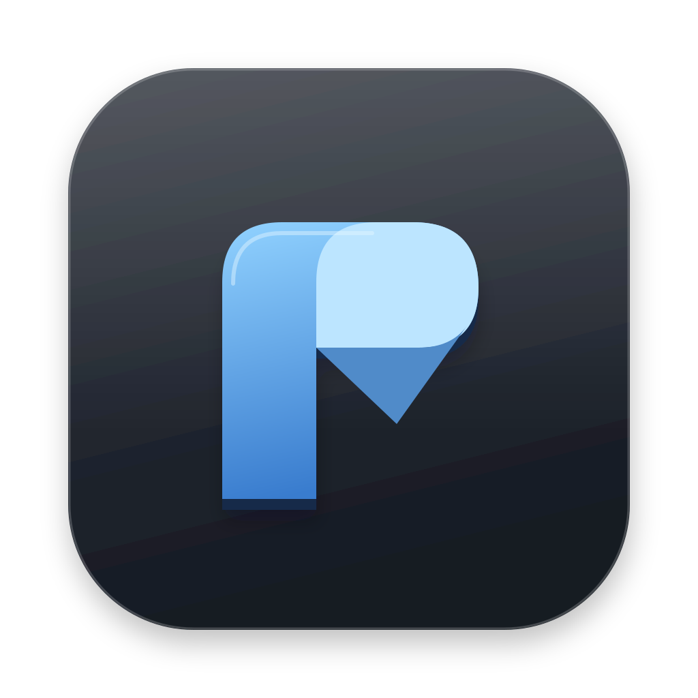
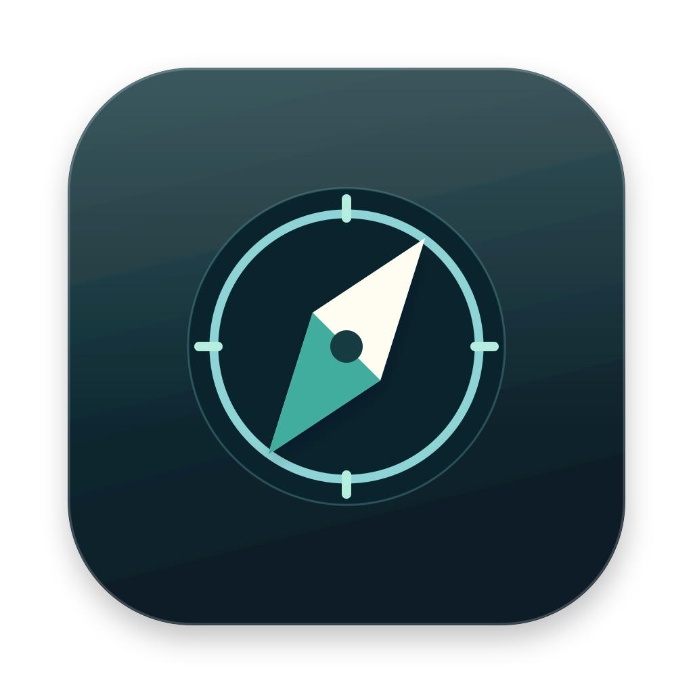
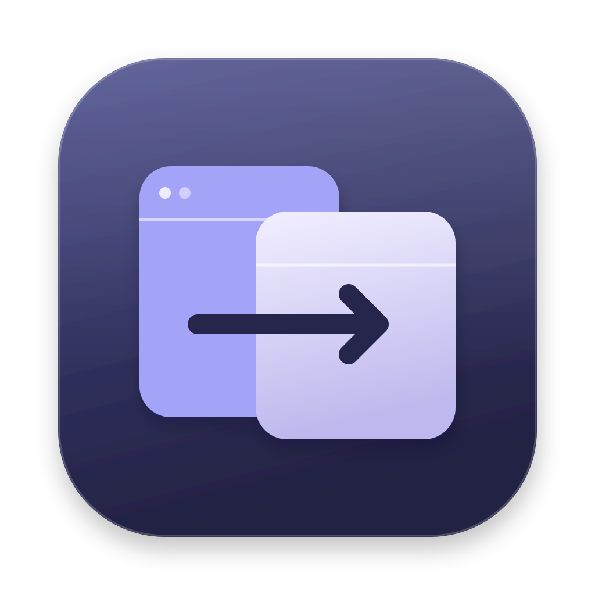
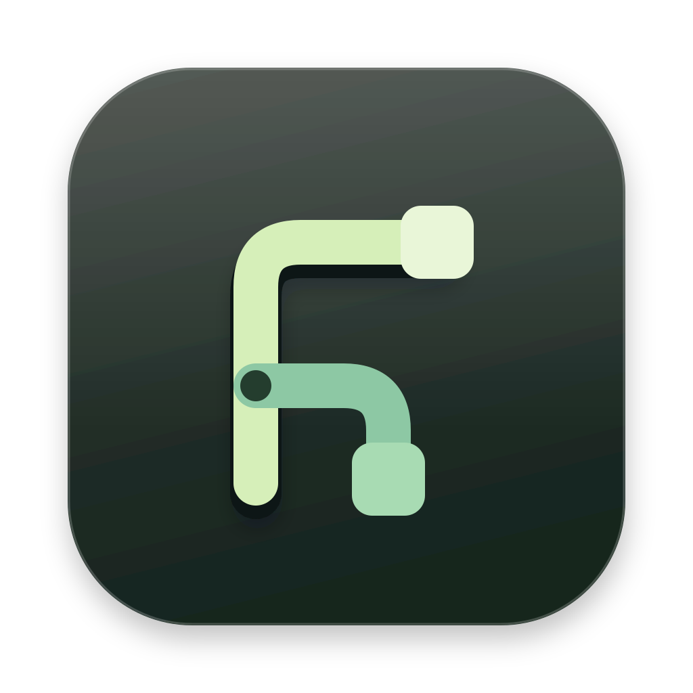

01
Ribbon R
The signature
A folded ribbon becomes a lowercase r. Quiet, ownable, and unmistakable in the Dock.
A fast file explorer deserves a distinct place in your Dock. Six original directions, from familiar folders to a new signature.

The signature
A folded ribbon becomes a lowercase r. Quiet, ownable, and unmistakable in the Dock.
The familiar, refined
An open blue folder with a crisp paper inset. Native file-manager DNA, stripped to the essentials.

Find your way
A luminous compass needle inside a precise circular frame. For discovery, not just storage.

Built for flow
Two offset panes and a forward-moving cut. A nod to dual-pane browsing and effortless transfers.
A little more energy
A single paper fold in warm orange. A bold silhouette that makes a fast explorer feel fast.

Everything connected
A branching path forms an abstract r. Your folders, locations, and connections in one simple mark.